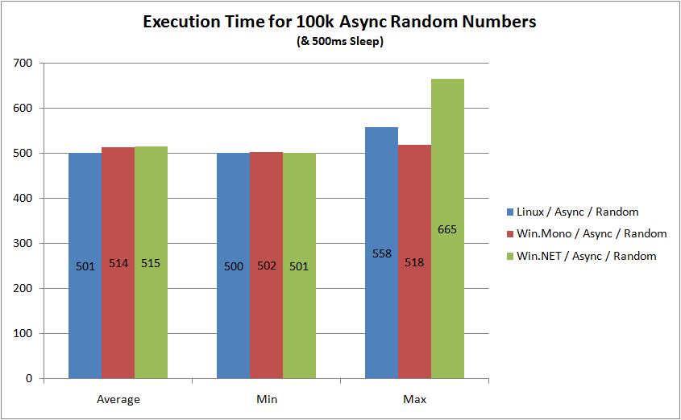

Your browser doesn't support the features required by impress.js, so you are presented with a simplified version of this presentation.
For the best experience please use the latest Chrome or Safari browser. Firefox 10 (to be released soon) will also handle it.
Mono
...and some "alternative" tech fun
1/18/2012
Mark Kockerbeck

(this presentation was done with impress.js)
First things first...
- It's pronounced MOAN-OH
- Started by Miguel de Icaza
- The logo is a Monkey (Mono is Spanish for Monkey)
- It's an Open Source project that is still active
(last commit was yesterday) - Novell did run the project but now it's Xamarin
(A company formed by Mono developers)
Why?
- It's .NET! You can write it right now w/ C#
- It's cross platform (Linux, Mac and even Windows)
- Unity uses it for scripting & tooling (see Lego Star Wars Quest for R2D2 using the Unity Web Client)
- Growing mobile space (MonoTouch and Mono for Android)
- Full static compilation onto iOS, PS3 and XBox360 platforms
What is it?
- An Open Source implementation of the .NET Framework
- C# Compiler (option for LLVM)
- Common Language Runtime
(The Common Language Infrastructure is an open standard / ECMA-335) - MonoDevelop, an IDE
- Code Execution Engine that translates CIL into native code either by JIT, Ahead-of-Time (AOT) or Full Static
Garbage Collection
- Comes with a Boehm-Demers-Weiser Conservative Garbage Collector (default)
- Comes with a Simple Generational GC (SGen)
- Arguably less performant than Java or .NET
- But...it really depends
- GC is swappable via command line, examples:
mono --gc=sgen ThreadSpeedTest.exe 30
mono --gc=boehm ThreadSpeedTest.exe 30
Usage & Tools
- mono - Main command for runtime / JIT compilation (like most Unix languages)
#!/bin/sh
/usr/bin/mono /path/to/my/app.exe "$@"
mono --aot -O=all test.exe - mcs - Mono's C# compiler
- mint - Mono interpreter
- xsp - Standalone ASP.NET web server
- xbuild - Mono version of MSBuild
xbuild /p:Configure=Release
Technologies Supported
- ASP.NET - via XSP / mod_mono for Apache
- WCF - Formerly called Olive. Has some limitations (no MSMQ, WSHttpBinding, Data Services or Workflow Services)
- WinForms - Deprecated, no support for WPF coming
- Database Connectivity - MySQL / SQLite / PostgreSQL
Performance Tests
- Downloads a website in 5 threads and 1 time synchronously for 10k iterations
- Logs the execution time (avg, min, max)
- One Linux m1.small instance
(Basic 32-bit Amazon Linux AMI 2011.09, 1 ECU, 1 Core, 1.7GB RAM) - One Windows m1.small instance
(Microsoft Windows Server 2008 Base, 1 ECU, 1 Core, 1.7GB RAM) - Mono on Linux vs. Mono on Windows vs. .NET on Windows
